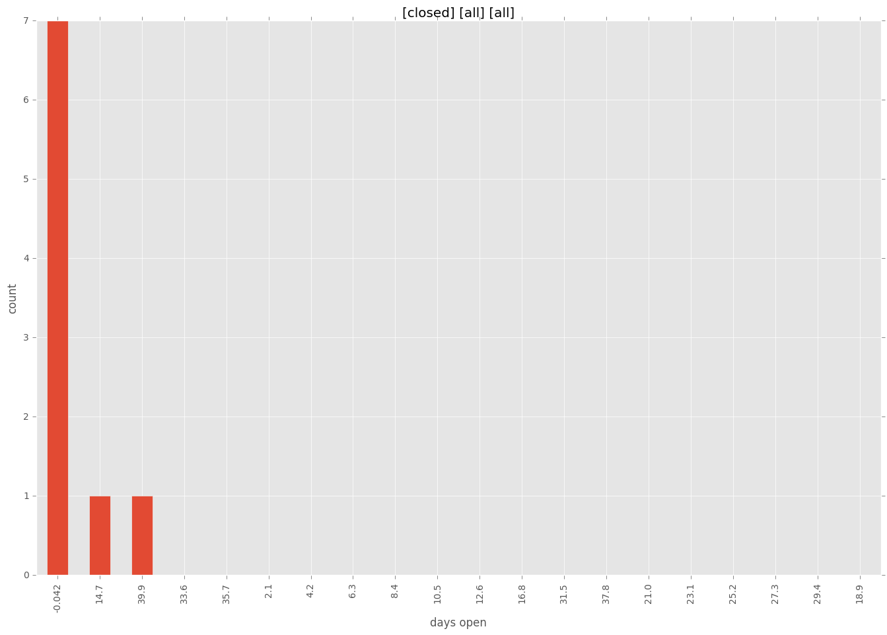

total issue counts
bugfix pull request: 6
feature pull request: 2
docs report: 1
pullrequest: 8
issue: 1
issue history
days open by issue type
feature pull request
count: 4
std: 24.248711306
min: 0
max: 42
median: 21.0
mean: 21.0
all
count: 12
std: 16.3343382499
min: 0
max: 42
median: 0.0
mean: 8.41666666667
pullrequest
count: 0
std: nan
min: nan
max: nan
median: nan
mean: nan
docs report
count: 1
std: nan
min: 16
max: 16
median: 16.0
mean: 16.0
bugfix pull request
count: 7
std: 0.377964473009
min: 0
max: 1
median: 0.0
mean: 0.142857142857
issue
count: 0
std: nan
min: nan
max: nan
median: nan
mean: nan
closures grouped by total days open
